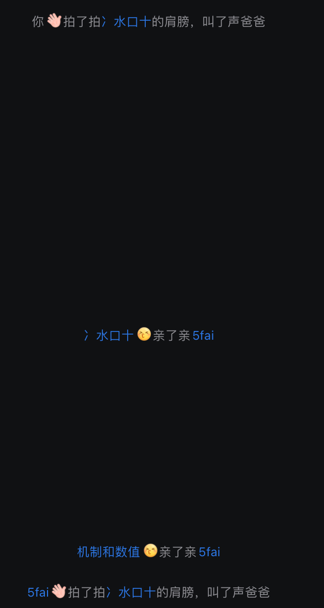
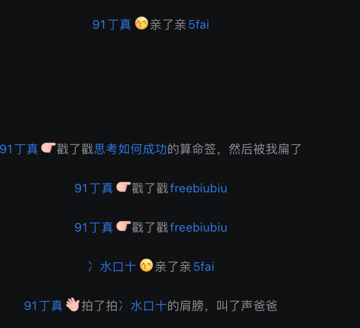
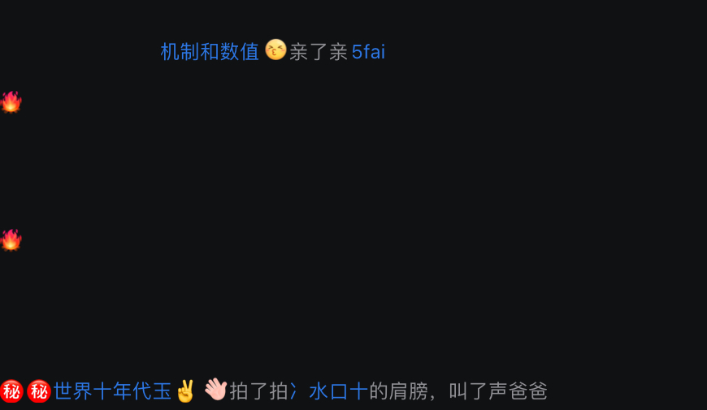
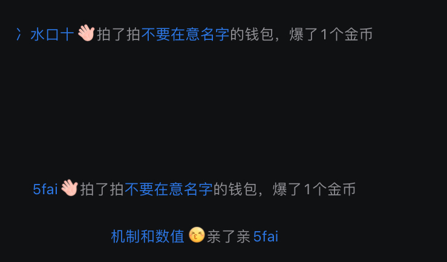
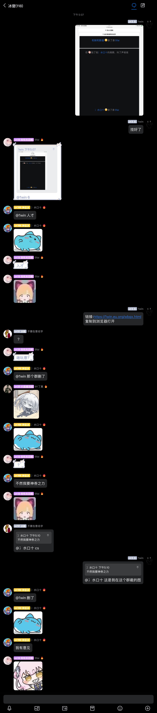
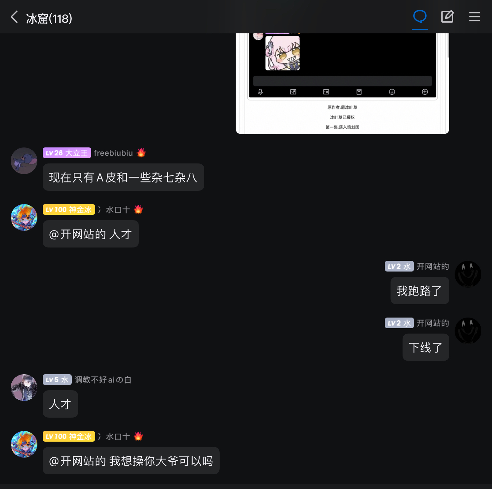
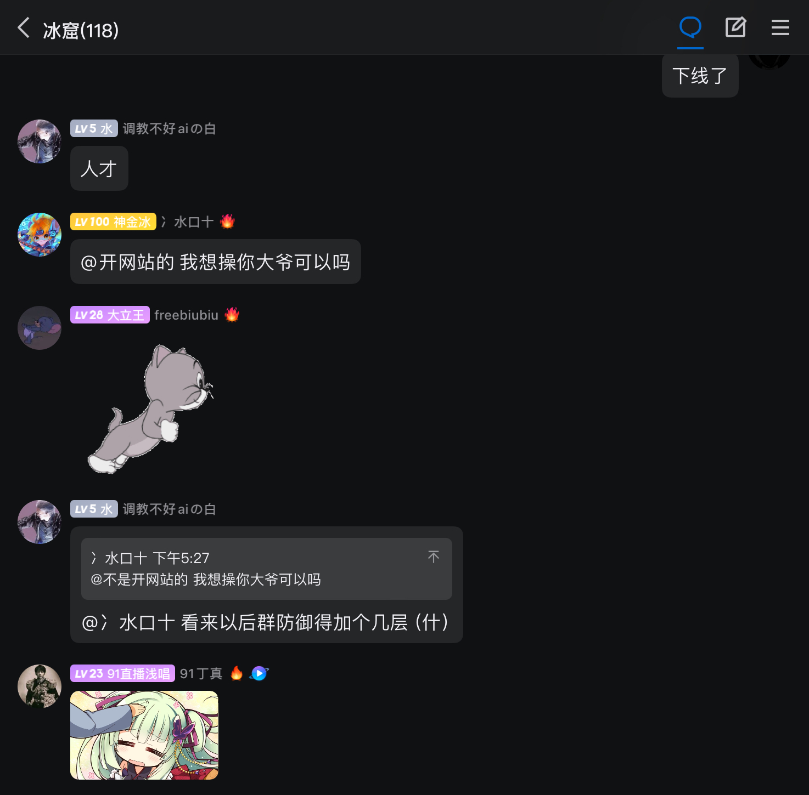

浅唱二创
视频
甘心大营救
原作者:屑冰叶草
冰叶草已授权
点击前往甘心大营救合集或者在bilibili搜索甘心大营救
(原本不是这样子的,因为直接把视频挂在这导致网页卡且添加了点击后加载BUG导致网页一堆所以改成这样了)
冰叶草的群有多逆天
纯属娱乐,这些都是站长在冰叶草的聊天群截图的
   传奇耐亲王的诞生
更新:冰叶草很介意，请看下图：
更新:冰叶草想操我大爷，请看下图：
 8.20更新


2024.11更新
精液冰叶群传奇头号人物——Freedom


接下来是抽象人物，这家伙在我网站评论区发巅
不对，这已经不是抽象了,这已经超越人类范畴了


会说话的浅唱
原作者允许了添加了，但由于加甘心大营救导致我的电脑访问网页很卡，所以不添加了
软件
复活浅唱
复活浅唱是站长基于复活劳大纺制版修改的一个安卓软件(其实站长根本不会安卓开发，站长只是把图片和部分改了)，由于复活牢大纺制版部分地方加密，所以部分地方显示牢大。
下载地址
点击这里(浅唱盒Q群有3.1.2特供版，但是如果在这里下的不能直接更新到3.1.2版本)网页
浅唱盒
猫鼠玩家的语音盒
网页链接:https://wbgx.pw
我不甘心原网页
就是这个网页的原版
网页链接:(需要加速器)"https://cndys.vercel.app/"
项目地址:"https://github.com/ab8ing/cndys"
重制版:https://wbgx.pw/li/a/old.html
爱唱TV
适合那些被浅梦拉黑的人看大帝直播
网页链接:https://ichang.tv.qqdd.pw/已停运
浅唱的生平事迹 👆（感谢由FBI探员C君提供虚拟文案，纯属娱乐）
文案纯属娱乐虚构，请勿当真！请适度玩梗，图片按文案的意思可能会抽象化，如果图片过于抽象自行脑补
1989年 👆
1989年浅唱出生

1岁时 👆
一岁就读美国哈佛大学旁边的垃圾桶

2岁时 👆
二岁被母亲捡到

3-5岁时 👆
- 三岁找到父亲
- 四岁便拥有骑士精神分裂
- 五岁开始骗号

6-7岁时 👆
- 六岁上幼儿园
- 七岁写出自传《骑士是如何当国王的》

方法是把国王杀了，王后当后宫的“R.I.P.”

8-12岁时 👆
- 八岁引领潮流
- 九岁写出感人小说


内容是：19岁女孩嫁给40岁老男人的故事“《简爱》”，逆天抽象

十岁因为自己闲着无聊进监狱(1win(站长)评论:无敌了)

十一岁在一张玛丽连海报后面挖洞越狱
十二岁改名唱丽丝
追破壁兔子掉进兔子洞
和疯子喝下午茶
疯子叫疯唱子
喜欢唱片机播放空白唱
旁边有只兔子
叫三月唱
13-28岁时 👆
十三岁当上公主
白唱公主和七个爱之花洒
公主浅唱被后妈抛弃
当了灰姑唱
穿着骗来的水晶拖鞋去城堡夺走后妈的政权
发动红色政变
引导十唱革命
十四岁
发布专辑
唱勒斯威夫特
乡村阴乐
十五刚获得唱莱美年度专辑
十六岁在唱唱A颁奖中被小劳抢话筒
十七岁就读楼兰大学学习楼兰语法
十八岁用安分守己
十九岁主修不甘心系
二十岁得了抑郁症，因为他不甘心
二十一岁他有趣
二十二岁发布专辑巜不甘心色》
二十三岁毕业于楼兰大学
二十四岁发布专辑《2023》是㳘行复古合成器述叙了他如何打不过白银晋级赛的
二十五岁《2023》获唱莱美不甘心奖
 二十六当被一个十八岁纯情小高中生进的故事骗了，他不甘心
二十六当被一个十八岁纯情小高中生进的故事骗了，他不甘心
二十七岁他不甘心的回来了
二十八岁发布专辑《甘心》
其中最热门的歌曲
《你看看你让我甘心了什么》

29岁时 👆
Old浅唱已经死了，我是无悔
至今，二十九岁浅唱仍在甘心哲学上研究

现实中的浅唱已经辍学回家了，而且还遭到了家人的支持。准备专心搞直播

"(浅唱大帝之前还说上职高比普高好)"
小彩蛋 👆

🥰更喜欢浅唱了（这是路人“即把”，不是"阿巴in”）
浅唱在8月6日23:06在b站发动态说:以后不直播了，因为为什么你们心里清楚
2024.8.7更新:浅唱把以后不直播了那个动态删了。(他不直播除了打单子怎么能赚钱?而且就他那技术，找他打单的人不多吧)
目前已成耐退王,时不时说退猫鼠 不直播,结果后面又回来了
使用电脑访问的可以按F12找注释(有彩蛋)
关于此网页 👆
网页纯用html制作，没什么含量但是有效果就行😂
此网站使用infinityfree进行运行网页
本网页原作者非常喜欢浅唱，是I唱哦
感谢FBI探员C君提供的文案
重制版:
关于浅唱本人 👆
浅唱
真名：陈佳嵘🆔号码（本人自爆）：34172120070918****
来自安徽芜湖东至县（🆔前六位），定居与广东东莞
现就读于：广东创新科技职业学院（技校/民办）已辍学，还得到了家人的支持
哔哩哔哩账号：UID:35001975
为什么浅唱被喷被抽象连我(阿巴in)打匹配/休闲模式的玩家都感受震撼，可以去哔哩哔哩搜索相关内容你就知道了🥰(传奇耐退王)
留言板
请和谐友善发言！谢谢了qwq，这只是个整活抽象站而已啦
非手机端用户建议使用手机查看或F12进入手机模式 以获得更好的观感捏
注意：以上内容纯属虚构娱乐，请勿当真！请适度玩梗！本网页与反浅唱联盟无关!
已经过阿巴in允许用它做的我不甘心那个网页为基础进行修改开了这个网站
项目地址:https://github.com/1111Windows/qcdd-wbgx当前网页未与仓库同步
重制版:https://wbgx.pw/li/a/old.html
1win 2024-∞(到服务器提供商跑路之前会一直运营) 1win.eu.org